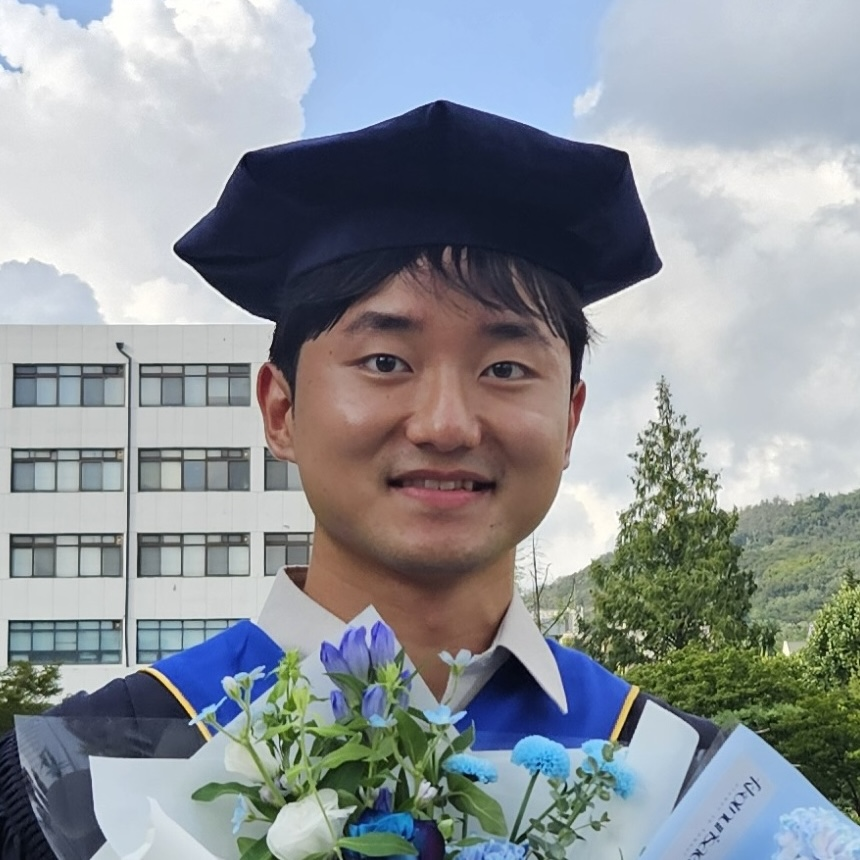
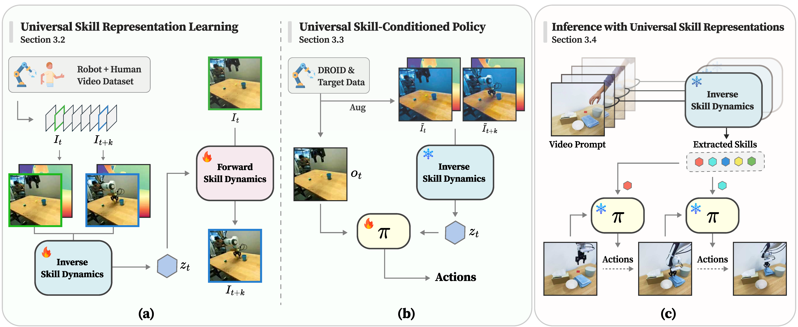
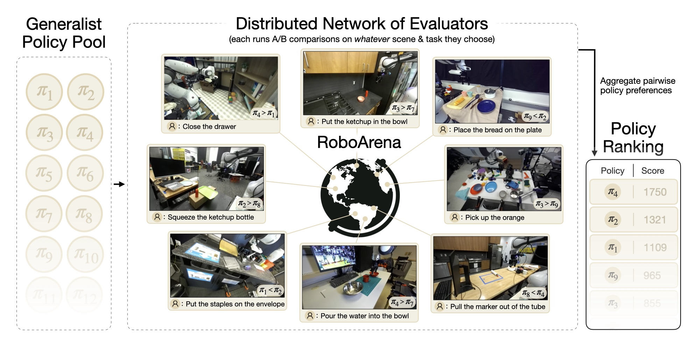
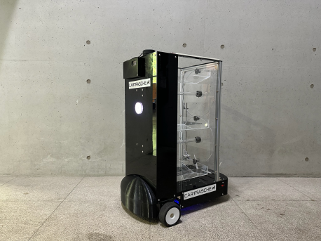

|
Meedeum Cho
I'm an undergraduate in Yonsei University, majoring in Mechanical Engineering with a double major in Computer Science.
Currently, I am advised by Prof. Youngwoon Lee, focusing on RL projects under his guidance.
I am interested in applying RL to tackle complex challenges in robot locomotion and manipulation tasks.
Previously, I have worked as an intern in MLCS Lab.
Email /
CV /
Github
|

|
|

|
UniSkill: Imitating Human Videos via Cross-Embodiment Skill Representations
Hanjung Kim*, Jaehyun Kang*, Hyolim Kang, Meedeum Cho, Seon Joo Kim, Youngwoon Lee
CoRL 2025
[Website]
[Paper]
[Code]
|
|

|
RoboArena: Distributed Real-World Evaluation of Generalist Robot Policies
Pranav Atreya*, Karl Pertsch*, Tony Lee*, ..., Meedeum Cho, ..., Sergey Levine
CoRL 2025
[Website]
[Paper]
[Code]
|
|

|
Autonomous Driving Auxiliary Cart Robot for Assembly Process
Minjun Chang, Wonjun Kim, Hyunjin Park, Meedeum Cho, Hyunjun Kim
*All contributors participated equally in this work.
2024 National ICT Smart Device Competition Grand Prize(1st place)
[Video]
[News]
[Code]
|
|
{kind=link}